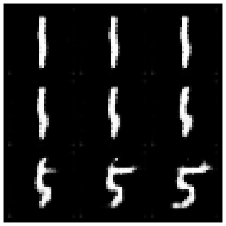
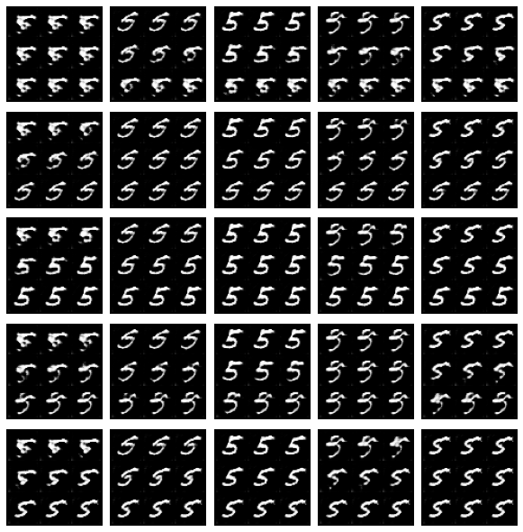

Build a Conditional GAN
Goals
In this notebook, you’re going to make a conditional GAN in order to generate hand-written images of digits, conditioned on the digit to be generated (the class vector). This will let you choose what digit you want to generate.
You’ll then do some exploration of the generated images to visualize what the noise and class vectors mean.
Learning Objectives
- Learn the technical difference between a conditional and unconditional GAN.
- Understand the distinction between the class and noise vector in a conditional GAN.
Getting Started
For this assignment, you will be using the MNIST dataset again, but there’s nothing stopping you from applying this generator code to produce images of animals conditioned on the species or pictures of faces conditioned on facial characteristics.
Note that this assignment requires no changes to the architectures of the generator or discriminator, only changes to the data passed to both. The generator will no longer take z_dim as an argument, but input_dim instead, since you need to pass in both the noise and class vectors. In addition to good variable naming, this also means that you can use the generator and discriminator code you have previously written with different parameters.
You will begin by importing the necessary libraries and building the generator and discriminator.
Packages and Visualization
1 | import torch |
Generator and Noise
1 | class Generator(nn.Module): |
Discriminator
1 | class Discriminator(nn.Module): |
Class Input
In conditional GANs, the input vector for the generator will also need to include the class information. The class is represented using a one-hot encoded vector where its length is the number of classes and each index represents a class. The vector is all 0’s and a 1 on the chosen class. Given the labels of multiple images (e.g. from a batch) and number of classes, please create one-hot vectors for each label. There is a class within the PyTorch functional library that can help you.
Optional hints for get_one_hot_labels
1. This code can be done in one line.
2. The documentation for [F.one_hot](https://pytorch.org/docs/stable/nn.functional.html#torch.nn.functional.one_hot) may be helpful.
1 | # UNQ_C1 (UNIQUE CELL IDENTIFIER, DO NOT EDIT) |
1 | assert ( |
Success!
Next, you need to be able to concatenate the one-hot class vector to the noise vector before giving it to the generator. You will also need to do this when adding the class channels to the discriminator.
To do this, you will need to write a function that combines two vectors. Remember that you need to ensure that the vectors are the same type: floats. Again, you can look to the PyTorch library for help.
Optional hints for combine_vectors
1. This code can also be written in one line.
2. The documentation for [torch.cat](https://pytorch.org/docs/master/generated/torch.cat.html) may be helpful.
3. Specifically, you might want to look at what the `dim` argument of `torch.cat` does.
1 | # UNQ_C2 (UNIQUE CELL IDENTIFIER, DO NOT EDIT) |
1 | combined = combine_vectors(torch.tensor([[1, 2], [3, 4]]), torch.tensor([[5, 6], [7, 8]])); |
Success!
Training
Now you can start to put it all together!
First, you will define some new parameters:
- mnist_shape: the number of pixels in each MNIST image, which has dimensions 28 x 28 and one channel (because it’s black-and-white) so 1 x 28 x 28
- n_classes: the number of classes in MNIST (10, since there are the digits from 0 to 9)
1 | mnist_shape = (1, 28, 28) |
And you also include the same parameters from previous assignments:
- criterion: the loss function
- n_epochs: the number of times you iterate through the entire dataset when training
- z_dim: the dimension of the noise vector
- display_step: how often to display/visualize the images
- batch_size: the number of images per forward/backward pass
- lr: the learning rate
- device: the device type
1 | criterion = nn.BCEWithLogitsLoss() |
Then, you can initialize your generator, discriminator, and optimizers. To do this, you will need to update the input dimensions for both models. For the generator, you will need to calculate the size of the input vector; recall that for conditional GANs, the generator’s input is the noise vector concatenated with the class vector. For the discriminator, you need to add a channel for every class.
1 | # UNQ_C3 (UNIQUE CELL IDENTIFIER, DO NOT EDIT) |
1 | def test_input_dims(): |
Success!
1 | generator_input_dim, discriminator_im_chan = get_input_dimensions(z_dim, mnist_shape, n_classes) |
Now to train, you would like both your generator and your discriminator to know what class of image should be generated. There are a few locations where you will need to implement code.
For example, if you’re generating a picture of the number “1”, you would need to:
- Tell that to the generator, so that it knows it should be generating a “1”
- Tell that to the discriminator, so that it knows it should be looking at a “1”. If the discriminator is told it should be looking at a 1 but sees something that’s clearly an 8, it can guess that it’s probably fake
There are no explicit unit tests here — if this block of code runs and you don’t change any of the other variables, then you’ve done it correctly!
1 | # UNQ_C4 (UNIQUE CELL IDENTIFIER, DO NOT EDIT) |
Exploration
You can do a bit of exploration now!
1 | # Before you explore, you should put the generator |
Changing the Class Vector
You can generate some numbers with your new model! You can add interpolation as well to make it more interesting.
So starting from a image, you will produce intermediate images that look more and more like the ending image until you get to the final image. Your’re basically morphing one image into another. You can choose what these two images will be using your conditional GAN.
1 | import math |

Changing the Noise Vector
Now, what happens if you hold the class constant, but instead you change the noise vector? You can also interpolate the noise vector and generate an image at each step.
1 | n_interpolation = 9 # How many intermediate images you want + 2 (for the start and end image) |

1 |